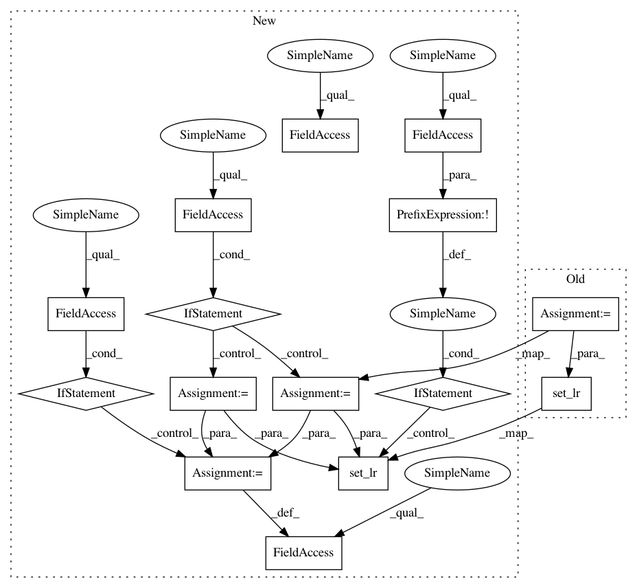

c9528bf8c8d5e32f41f64d6d3c294cae19fc2982,train.py,,train,#Any#,32
Before Change
crit = utils.LanguageModelCriterion()
rl_crit = utils.RewardCriterion()
optimizer = utils.build_optimizer(model.parameters(), opt)
// Load the optimizer
if vars(opt).get("start_from", None) is not None and os.path.isfile(os.path.join(opt.start_from,"optimizer.pth")):
optimizer.load_state_dict(torch.load(os.path.join(opt.start_from, "optimizer.pth")))
while True:
if update_lr_flag:
// Assign the learning rate
if epoch > opt.learning_rate_decay_start and opt.learning_rate_decay_start >= 0:
frac = (epoch - opt.learning_rate_decay_start) // opt.learning_rate_decay_every
decay_factor = opt.learning_rate_decay_rate ** frac
opt.current_lr = opt.learning_rate * decay_factor
else:
opt.current_lr = opt.learning_rate
utils.set_lr(optimizer, opt.current_lr) // set the decayed rate
// Assign the scheduled sampling prob
if epoch > opt.scheduled_sampling_start and opt.scheduled_sampling_start >= 0:
frac = (epoch - opt.scheduled_sampling_start) // opt.scheduled_sampling_increase_every
After Change
// Assure in training mode
dp_model.train()
if opt.label_smoothing > 0:
crit = utils.LabelSmoothing(smoothing=opt.label_smoothing)
else:
crit = utils.LanguageModelCriterion()
rl_crit = utils.RewardCriterion()
if opt.noamopt:
optimizer = utils.get_std_opt(model.model)
else:
optimizer = utils.build_optimizer(model.parameters(), opt)
// Load the optimizer
if vars(opt).get("start_from", None) is not None and os.path.isfile(os.path.join(opt.start_from,"optimizer.pth")):
optimizer.load_state_dict(torch.load(os.path.join(opt.start_from, "optimizer.pth")))
while True:
if epoch_done:
if not opt.noamopt:
// Assign the learning rate
if epoch > opt.learning_rate_decay_start and opt.learning_rate_decay_start >= 0:
frac = (epoch - opt.learning_rate_decay_start) // opt.learning_rate_decay_every
decay_factor = opt.learning_rate_decay_rate ** frac
opt.current_lr = opt.learning_rate * decay_factor
else:
opt.current_lr = opt.learning_rate
utils.set_lr(optimizer, opt.current_lr) // set the decayed rate
// Assign the scheduled sampling prob
if epoch > opt.scheduled_sampling_start and opt.scheduled_sampling_start >= 0:
frac = (epoch - opt.scheduled_sampling_start) // opt.scheduled_sampling_increase_every
opt.ss_prob = min(opt.scheduled_sampling_increase_prob * frac, opt.scheduled_sampling_max_prob)
model.ss_prob = opt.ss_prob
// If start self critical training
if opt.self_critical_after != -1 and epoch >= opt.self_critical_after:
sc_flag = True
init_scorer(opt.cached_tokens)
else:
sc_flag = False
epoch_done = False
start = time.time()
// Load data from train split (0)
data = loader.get_batch("train")
print("Read data:", time.time() - start)
torch.cuda.synchronize()
start = time.time()
tmp = [data["fc_feats"], data["att_feats"], data["labels"], data["masks"], data["att_masks"]]
tmp = [_ if _ is None else torch.from_numpy(_).cuda() for _ in tmp]
fc_feats, att_feats, labels, masks, att_masks = tmp
optimizer.zero_grad()
if not sc_flag:
loss = crit(dp_model(fc_feats, att_feats, labels, att_masks), labels[:,1:], masks[:,1:])
else:
gen_result, sample_logprobs = dp_model(fc_feats, att_feats, att_masks, opt={"sample_max":0}, mode="sample")
reward = get_self_critical_reward(dp_model, fc_feats, att_feats, att_masks, data, gen_result, opt)
loss = rl_crit(sample_logprobs, gen_result.data, torch.from_numpy(reward).float().cuda())
loss.backward()
utils.clip_gradient(optimizer, opt.grad_clip)
optimizer.step()
train_loss = loss.item()
torch.cuda.synchronize()
end = time.time()
if not sc_flag:
print("iter {} (epoch {}), train_loss = {:.3f}, time/batch = {:.3f}" \
.format(iteration, epoch, train_loss, end - start))
else:
print("iter {} (epoch {}), avg_reward = {:.3f}, time/batch = {:.3f}" \
.format(iteration, epoch, np.mean(reward[:,0]), end - start))
// Update the iteration and epoch
iteration += 1
if data["bounds"]["wrapped"]:
epoch += 1
epoch_done = True
// Write the training loss summary
if (iteration % opt.losses_log_every == 0):
add_summary_value(tb_summary_writer, "train_loss", train_loss, iteration)
if opt.noamopt:
opt.current_lr = optimizer.rate()
add_summary_value(tb_summary_writer, "learning_rate", opt.current_lr, iteration)
add_summary_value(tb_summary_writer, "scheduled_sampling_prob", model.ss_prob, iteration)
if sc_flag:
add_summary_value(tb_summary_writer, "avg_reward", np.mean(reward[:,0]), iteration)
In pattern: SUPERPATTERN
Frequency: 4
Non-data size: 15
Instances
Project Name: ruotianluo/self-critical.pytorch
Commit Name: c9528bf8c8d5e32f41f64d6d3c294cae19fc2982
Time: 2018-05-31
Author: rluo@ttic.edu
File Name: train.py
Class Name:
Method Name: train
Project Name: ruotianluo/self-critical.pytorch
Commit Name: c9528bf8c8d5e32f41f64d6d3c294cae19fc2982
Time: 2018-05-31
Author: rluo@ttic.edu
File Name: train.py
Class Name:
Method Name: train
Project Name: ruotianluo/ImageCaptioning.pytorch
Commit Name: a70d02452dd1346826462f769f775abbf6bc2100
Time: 2019-04-09
Author: rluo@ttic.edu
File Name: train.py
Class Name:
Method Name: train